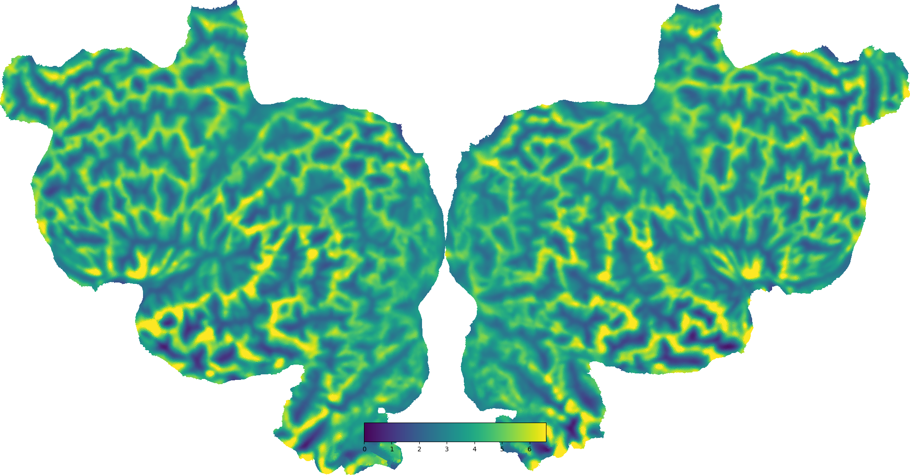
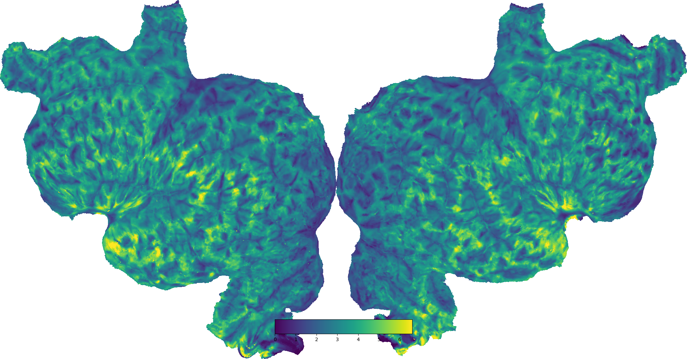
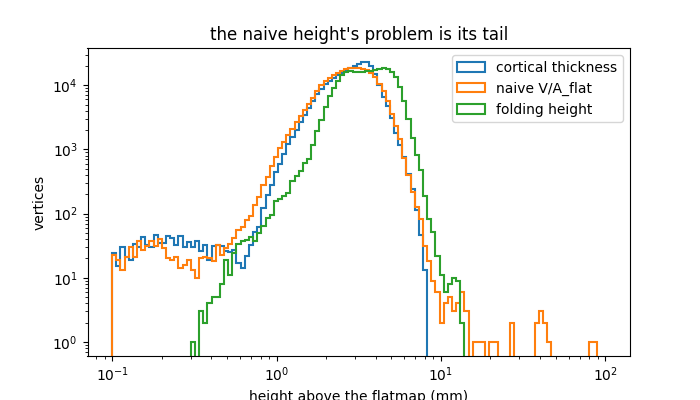
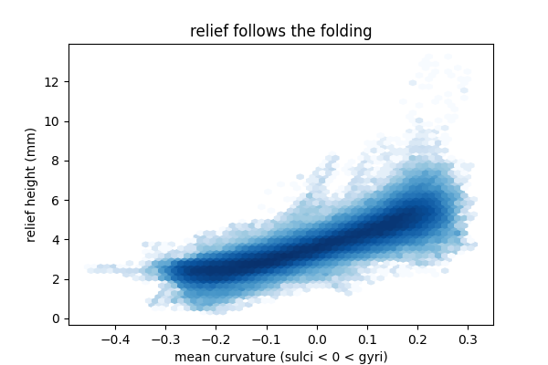

Note
Go to the end to download the full example code.
Bumpy Flatmaps¶
A flatmap throws away the folding of the cortical surface, which is a shame: where the gyri and sulci were is genuinely useful context, and once a flatmap is covered in data there is nothing left to show it. The usual fix is to shade the flatmap by curvature underneath the data, but that only works where the data is transparent.
The bumpy flatmap puts the folding back as relief instead of as color. Cortex is 2 to 5 mm thick, so imagine peeling the cortical slab off the white matter, making the flattening cuts, and laying it down. The white matter side ends up flat, and the pial side sits some distance above it.
How far above turns out to depend a great deal on which area you divide the column’s volume by. The flattened area is the more obvious choice and it does not work: a flatmap’s area distortion measures essentially uncorrelated with curvature, so that denominator contributes no folding and injects the flattening algorithm’s artifacts instead, besides giving enormous heights wherever flattening crushed a triangle. What is left is close to a map of cortical thickness, which is blobby and reads as round knobs.
cortex.polyutils.folding_height divides by the folded white matter area
instead, which with r = sqrt(A_pia / A_wm) is thickness * (1 + r + r**2)
/ 3. r is what carries the folding: the pia has more area than the white
matter beneath a gyral crown and less in a fundus.
The naive volume-over-flattened-area field is plotted below for comparison.
import numpy as np
import matplotlib.pyplot as plt
import cortex
from cortex.polyutils import naive_prism_height
subject = "S1"
# Cached in the database, so this is a lookup; computing it takes a few seconds
# per hemisphere. See `cortex.polyutils.FlatSlab` for the parameters.
npz = cortex.db.get_surfinfo(subject, type="bumpy_flatmap")
offsets = np.vstack([npz["bump_left"], npz["bump_right"]])
npz.close()
# The two things it is being compared against, computed per hemisphere.
naive, thickness, onmap = [], [], []
for hemi in ["lh", "rh"]:
wm, polys = cortex.db.get_surf(subject, "wm", hemi)
pia, _ = cortex.db.get_surf(subject, "pia", hemi)
flat, flatpolys = cortex.db.get_surf(subject, "flat", hemi)
naive.append(naive_prism_height(flat, wm, pia, flatpolys))
thickness.append(np.linalg.norm(pia - wm, axis=1))
# Vertices cut away from the flatmap -- the medial wall -- have no relief.
mask = np.zeros(len(wm), bool)
mask[flatpolys.ravel()] = True
onmap.append(mask)
naive = np.concatenate(naive)
thickness = np.concatenate(thickness)
onmap = np.concatenate(onmap)
relief = offsets[:, 2]
The relief itself, shown alongside the naive volume-preserving height on the same color scale, which is what makes the difference obvious: the naive map is mostly flat with a scatter of very bright spikes, because its range is set by a handful of crushed triangles.
vmax = float(np.percentile(relief[onmap], 99))
for name, field in [("folding height", relief),
("naive V/A_flat", naive)]:
vertex = cortex.Vertex(field, subject, vmin=0, vmax=vmax, cmap="viridis")
cortex.quickshow(vertex, with_rois=False, with_labels=False,
with_curvature=False)
plt.title("bumpy flatmap height, %s (mm)" % name)


Where the spikes are. Plotted as distributions, on a log axis because the naive height’s problem is entirely in its tail. Cortex is 2-5 mm thick, so a sensible bumpy flatmap should sit in roughly that range; the naive height runs well past it.
fig, ax = plt.subplots(figsize=(7, 4))
bins = np.logspace(-1, 2, 120)
for name, field in [("cortical thickness", thickness),
("naive V/A_flat", naive), ("folding height", relief)]:
ax.hist(np.clip(field[onmap], 1e-2, None), bins=bins, histtype="step",
label=name, linewidth=1.5)
ax.set_xscale("log")
ax.set_yscale("log")
ax.set_xlabel("height above the flatmap (mm)")
ax.set_ylabel("vertices")
ax.legend()
ax.set_title("the naive height's problem is its tail")

Text(0.5, 1.0, "the naive height's problem is its tail")
Finally, the check that the relief means what it should: height against mean curvature. Gyral crowns, where the pia carries more area than the white matter beneath it, end up thicker; sulcal fundi end up thinner.
curv = cortex.db.get_surfinfo(subject, type="curvature")
fig, ax = plt.subplots(figsize=(6, 4))
ax.hexbin(curv.data[onmap], relief[onmap], gridsize=60, bins="log",
cmap="Blues")
ax.set_xlabel("mean curvature (sulci < 0 < gyri)")
ax.set_ylabel("relief height (mm)")
ax.set_title("relief follows the folding")
plt.show()

Total running time of the script: (0 minutes 2.000 seconds)